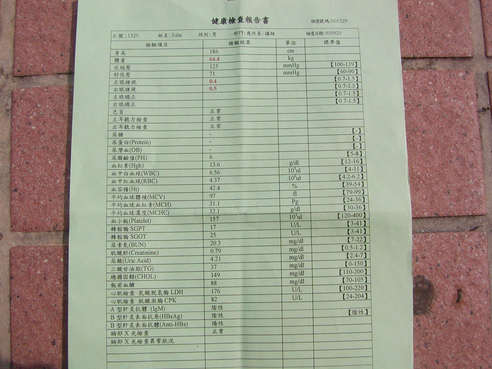
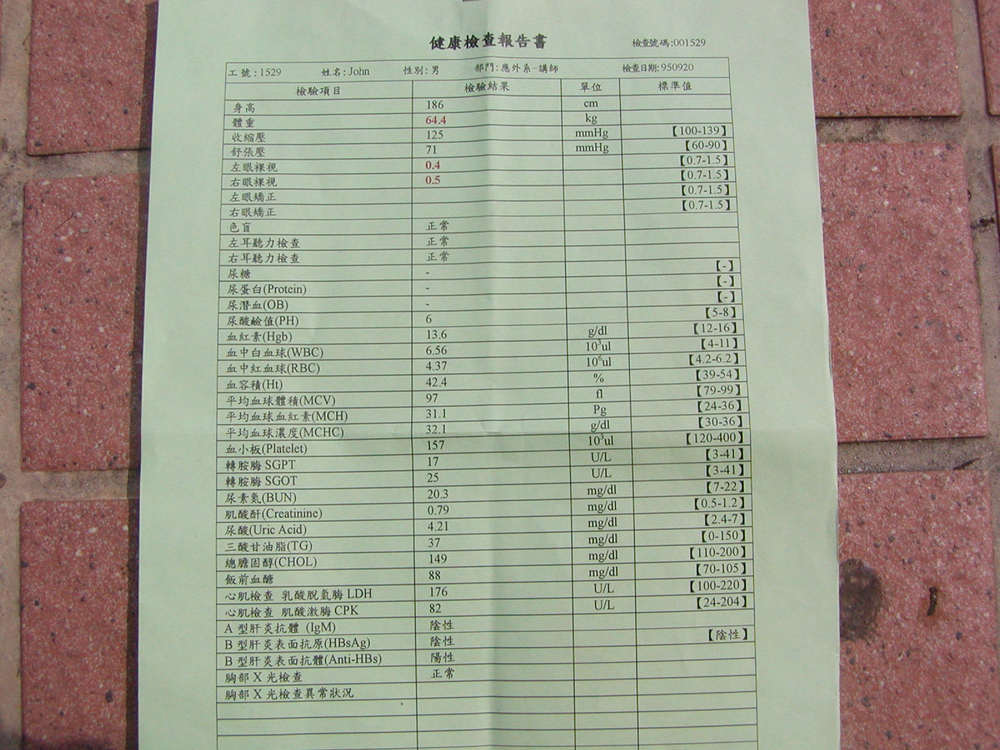

I am energetic both mentally and physically.
I jog for 40-50 minutes every Saturday and Sunday and do pushups.
I can run 10 kilometers in an hour and do 65 pushups (slowly).
Here is my latest medical checkup.


|
I am energetic both mentally and physically. I jog for 40-50 minutes every Saturday and Sunday and do pushups. I can run 10 kilometers in an hour and do 65 pushups (slowly). Here is my latest medical checkup.  |
|